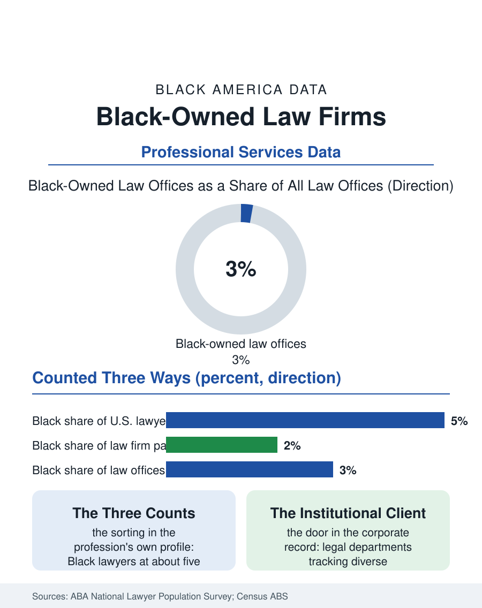

Black Business
Counsel and Ownership: Black-Owned Law Firms
Black lawyers are about five percent of the profession and own a few percent of its offices, capturing a smaller share still of its revenue. The law firm file.

The Black-owned law firm is a small institution with an outsized history, the profession's door into courts that once would not hear its founders. Today Black-owned firms hold a low single-digit share of the nation's law offices in the business counts, most of them small, and they operate inside a profession where the largest firms remain overwhelmingly white at the partnership level. This article reads the law firm file, from the solo practice on the commercial strip to the boutiques winning institutional clients.
A Profession Counted Twice
The profession counts Black lawyers twice, once as individuals and once as owners, and the two counts tell different stories. The American Bar Association's profile puts Black lawyers at roughly five percent of the profession, a share that has crept upward over decades. Ownership concentrates differently: Black-owned employer firms in the Census Bureau's business survey are a few percent of law offices, and the revenue gap dwarfs the count gap, because Black firms sit at the small end of the size distribution, solo and two-to-five-lawyer practices serving individuals, small businesses, churches, and municipalities. The big-firm alternative absorbs much of the Black legal talent the pipeline produces: the national partnership surveys record Black partners at roughly two percent of equity partnerships in the largest firms, a figure whose stagnation across decades of stated commitment is one of the file's most cited frustrations. Between the solo practice and the big firm sits the Black boutique, litigation, government contracts, public finance, labor, built by partners who left large firms carrying portable clients, and the boutique tier is where the ownership story has actually moved, winning institutional work in the cities where Black political leadership controls the client side of the table, city attorneys' offices, bond counsel lists, and airport and utility authorities.
Clients, Capital, and the Referral Economy
Law is a referral economy, and the file's economics follow the referrals. Corporate legal departments distribute the profession's largest fees, and their outside-counsel decisions run through relationship networks formed in the big firms, the bar associations, and the golf-and-conference circuit the industry runs on. Supplier-diversity programs in corporate legal departments, formalized over the last two decades, created a documented door: a growing number of large companies track diverse outside counsel spend and require diverse slates in beauty contests for new matters, and Black firms' receipts from corporate clients have grown measurably from that base, though from a base near zero. The public client base remains the sector's ballast. Black-majority cities and counties buy legal services at scale, and the political economy is candid in the record: administrations elected by Black voters direct bond, litigation, and agency work to Black firms as a matter of both confidence and constituency. The vulnerability mirrors the strength, since electoral turnover can reallocate a firm's book in a single cycle, and the mature firms in the file diversify deliberately across administrations, states, and practice areas, treating political concentration as a risk to manage rather than a patronage stream to ride.
The Pipeline Behind the Partnership
The firm's future is decided in the law school file elsewhere in this atlas: Black students are a modest share of enrollment, carry the heaviest debt loads in legal education, and sort into public interest and government at high rates and into large firms at low ones. For the Black-owned firm the pipeline question is recruiting against the big firm's salary with the ownership proposition, equity in a decade instead of a lottery ticket at a partnership vote the statistics say rarely lands. The firms that win that argument sell a true bill of goods: earlier client responsibility, courtroom time in the first years rather than the fifth, and a partnership track measured in years with books that can be verified. Technology has rewritten the small firm's overhead in the last decade, cloud practice systems, contract review automation, and virtual staffing compressing the back-office disadvantage that once made the solo practice uncompetitive against institutional billing machinery. The law firm file closes where the profession's own surveys close: the individual count rising slowly, the ownership count smaller, the revenue count smallest, and the distance between those three numbers measuring exactly how much of the profession's value Black lawyers are permitted to own, a distance the boutique generation is now spending its careers trying to close.
More in Black Business
Black-Owned Businesses: Counts, Receipts, and the Representation Gap
About 161,000 Black-owned employer firms and three million solo ventures: how the Census Bureau counts Black business ownership, where firms concentrate, and the gap between population share and business share.
Black Median Net Worth: The Wealth Gap in Federal Reserve Data
The Federal Reserve puts Black median family net worth at $44,900, against $285,000 for White families — about 16 cents on the dollar. The widest gap in economic data.
Black Buying Power: The $1.8 Trillion Consumer Economy
Black buying power is estimated at about $1.8 trillion — larger than the economy of most nations. What the figure measures, who produces it, and what it buys.
Source: American Bar Association, National Lawyer Population Survey and lawyer demographics reports; U.S. Census Bureau, Annual Business Survey (NAICS 54111).